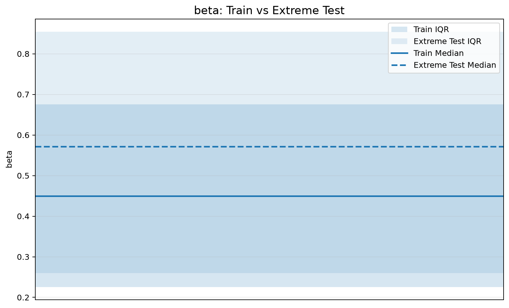

Two generations, one physics engine
Both dataset iterations were produced by relativistic_simulator — the difference is entirely in how the input parameter ranges (especially β) were sampled.
Iteration 1 — default-range dataset
Training file: relativistic_dataset_1m.npy — 1,000,000 rows
Generated via: generate_dataset(n_samples=1_000_000, random_seed=42)
Ranges: mass ∈ [100, 10,000] kg · force ∈ [10⁴, 10⁷] N · β ∈ [0, 0.8] · time ∈ [0, 100] s
Test file: relativistic_extreme_test_10k.npy — 10,000 rows
Generated via: a custom rng(2026) loop calling simulate(..., method="analytic") per row
β mixture: 70% U(0, 0.8) · 20% U(0.8, 0.95) · 10% U(0.95, 0.999999), shuffled
Iteration 2 — physics_data.npy (current)
Training file: physics_data.npy — 1,000,000 rows, 13 columns, float64
Generated via: a custom rng(2026) loop calling simulate() directly per row (bypassing generate_dataset() to control the β mixture)
Formulas: mass = 10^U(0,6) kg · force = ±10^U(0,10) N · time = 10^U(-4,5) s
β mixture: 70% U(0, 0.8) · 20% U(0.8, 0.95) · 10% U(0.95, 0.999999), shuffled — training itself now spans the full relativistic regime.
Split (notebooks/ml.ipynb, neuralnetwork.ipynb):
sklearn.train_test_split, test_size=0.2 then 0.5, random_state=42.
relativistic_extreme_test_10k.npy) is the same file used in Iteration 1 — but because Iteration-2 training now also spans β up to 0.999999, this is no longer a true out-of-distribution test for the current models. It is an independently re-drawn 10,000-row sample from an overlapping distribution. See Normal vs Extreme for what this means for the results.Feature explorer
Per-feature/target statistics measured directly from data/image_folder/distribution_summary.csv (Iteration 2 train vs. the extreme_test_10k evaluation set).
Measured distribution shift (train vs. extreme test)
These plots were generated directly by the project's data-analysis notebook and are shown here verbatim.

Dataset validation
The engine's dataset.validate() report for the full 1,000,000-row Iteration-2 dataset (from data_gen.ipynb):